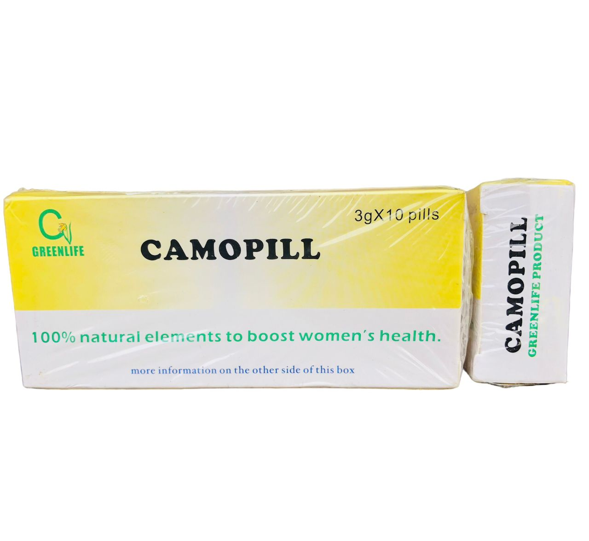
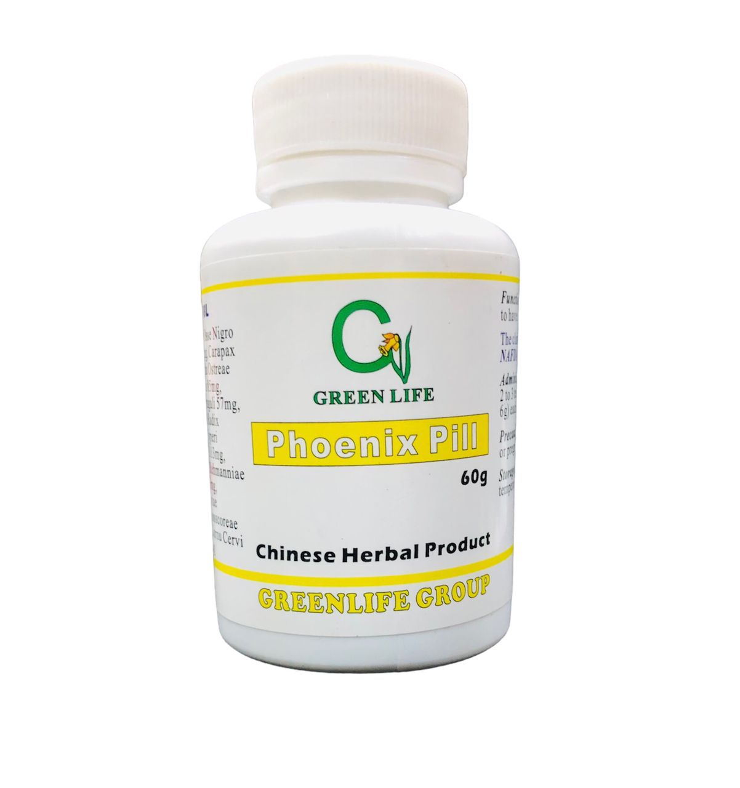
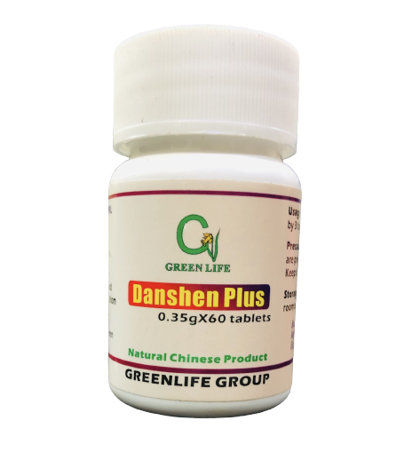
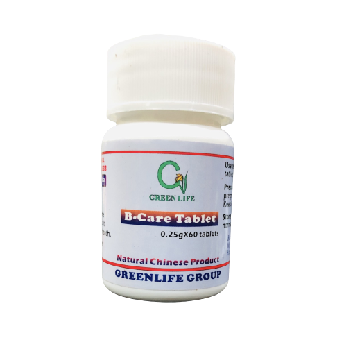
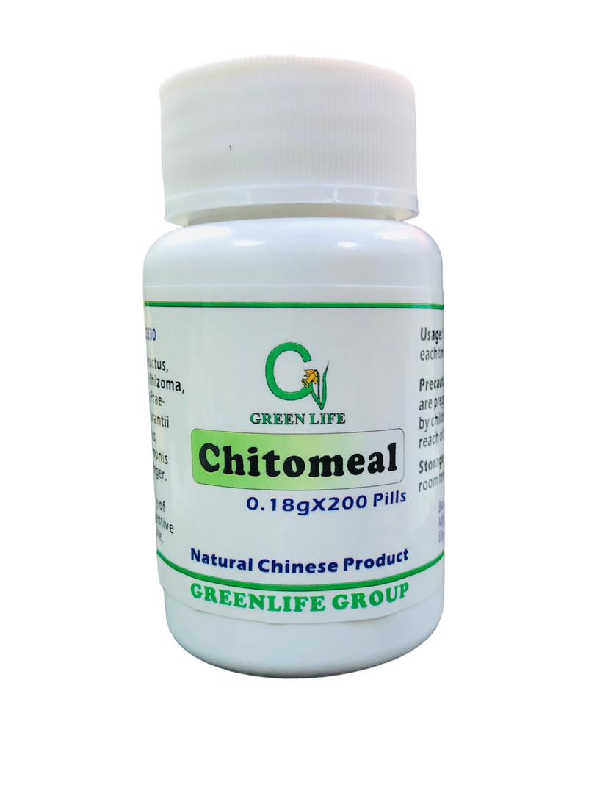
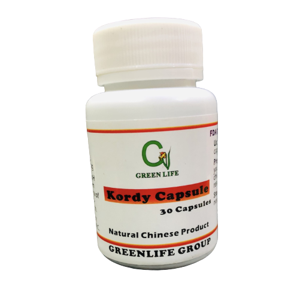
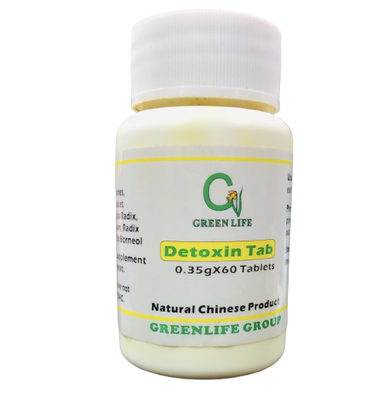
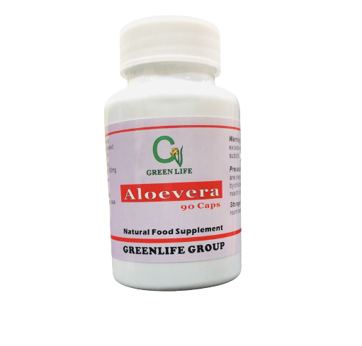
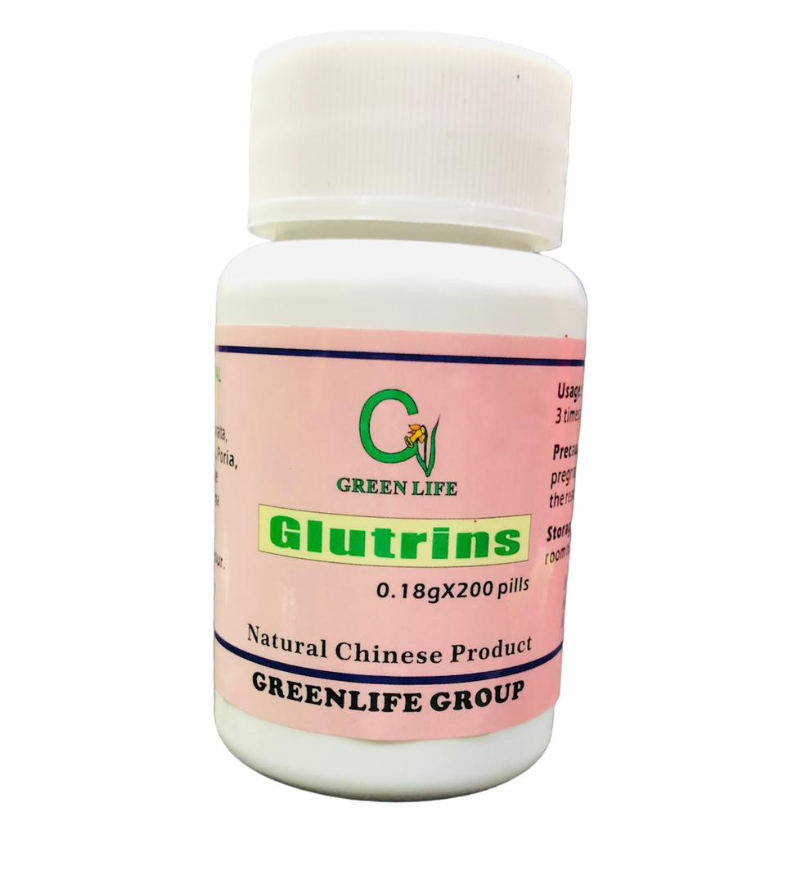
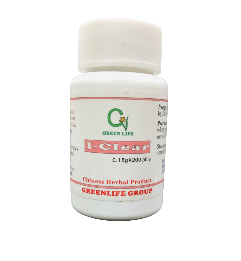

Men's Healthcare

VIGO CAPSULE (Sexual Weakness — Quick action)
Vigo capsule is a 100% herbal product based on a secret formula from China. The pure natural formula will improve sexual potency, enhance energy and endurance.
Functions: Reinforce vital energy and strengthen sexual function. Use for sexual weakness, impotence, premature ejaculation.
₦ 18,500
Order Now
MEN FORMULA PILLS(Low Sperm Count And Infertility)
Functions & Indications:
It treats deficiency syndrome of the kidney, Treats low sperm count, seminal emission, backache, premature ejaculation, impotence & sterility.
₦ 18,500
Order Now
Prostasure Tablet(Prostate Enlargement)
Functions & Indications:
It helps promote urinary flow. Eliminate the nagging discomfort & inconvinience . Helps maintain a healthy prostate & a healthy urinary system. Maintain a healthy prostate gland, conditions prostate gland functions,circulates blood stops pains and inflammation in the prostate. Used for prostate hyperplasia, prostatitis and the symptoms such as urinary frequency ,percipitant urination, pain in urination , drip after urination , urethra dripping white etc.
₦ 13,500
Order Now
Ki Vital Care Pill( Waist Pain, Kidney Weakness)
Ki Vital Care Pills is extracted from selected herbal ingredients with advanced mordern technology. It is an ideal solution for the symptoms caused by deficiency of Kidney Yang-Weakness of the kidney, especially for males who is exhuasted by busy social work or excessive sexual life.
Functions & Indications:
It tonify kidney yang and QI, benefits tendons and bone. Used for various symptoms associated with deficiency of kidney yang,including lower back pain, weak waist and legs , pain in the kidneys, dizziness,
difficult breathing, and ear-ringing. Also urinary dribbling, incontinence , prostatitis or weak stream. Treats problems due to excessive male sexual activity,
including fatigue , poor memory and lower backache . Also used as a general kidney yang tonic.
₦ 13,000
Order NowWOMEN'S HEALTHCARE

Mother Qui Tea(After-birth Healthcare)
Mother Qui Tea is well known for its benefits to women who just had a child-birth or miscarriage. It helps to promote menstrual blood flow and clear blood clots for menstrual disorder after child birth. It has been used to correct delayed periods. Due to antispasmodic effects, Mother Qui also helps to restore uterine muscle tone after child birth or mis-carriage , it is also useful for relieving both the physical and emotional symptoms of pre-menstural syndrome and menopause.
Indications:
For women who is weak because of child birth or miscarriage. Typical symptoms are menstural disorder , fatigue , weak uterine and vigina muscle , mental disorder , and irrgular heart beat.
₦ 8,500
Order Now
Red Peony Capsule(Fibroid,Stasis, Uterine Bleeding)
Function & Indications: Remove fixed abdominal masses. Painful Blood Stasis in the uterus , invigorates Blood.
Related indications: Fibroid , other hard lumps in lower abdomen with mensturation, pain from endometriosis, irregular menstruation,menopausal disorder , blood stasis after miscarriage.
₦ 16,100
Order Now
Pidcare Tablet(Pelvic & Viginal Healthcare)
Function & Indications: Improving Blood circulation, dispersing blood stasis , softening the hardened or blocked part of the body, antipyretic & detoxication.Used for chronic pelvic infection, bacterodial vaginitis, and blood stasis combined with wetness , heat evil. effective for the white, odor, abnormal discharge and abdomen pain caused by vaginits.
₦ 14,500
Order Now
F-Qui Tablet(Blood Tonic & Women's Pain)
Functions & Indications: Blood Tonic, active blood circulation, nourishes the female reproductive system. helping to restore menstural regularity, reduction in symptoms related to PMS and menopause & lower blood pressure. Use for mensturation disorder, blood stasis after parturition, dysmenorrhea , anaemia.
₦ 13,900
Order Now
Camopill (Tumor,Stasis , Breast Cancer, Enlarged liver/spleen)
Camopill is a traditional formula for blood stasis such as fibroid or tumor in thr chest or breast or abdomen. However , it is also good for males and females whose liver & spleen are weak in functions or blood circulation.
Function & Indications: It activates the blood, remove blood stasis , disintegrate mass chiefly in the abdomen or uterus casused by blood stasis . Restore normal mensuration in cases of pathological anemia. Used for fibroid , anemia , suppressed mensuration ,mass in abdomen with fixed shapes and localized pain , hepatosplenomegaly(enlarged liver & spleen), cirrhosis,tumor.
₦ 18,500
Order Now
Phoenix Pill(Reproductive System Repair)
Phoenix Pill is an acient formula for women daily supplement especially when their reproductiive system is in disorder caused by blood shortage pressure , stress, malnutrition, miscarriage and production. it can nourish the blood production supply QI tonify both YIN & YANG.
Functions & Indications
- Similar with Women Formula 2.
- QI & Blood shortage , caused by large menstrual discharge.
- Restore reprodctive system after production or miscarriage.
- Eliminates symptoms like weakness, body swelling , dizziness ,sweating , low fever , menstrual disorder , whites or large discharges.
- It restores the reproductiive system being flourished.
₦ 15,500
Order NowBRAIN,BLOOD CIRCULATION & ENERGY

ST PILLS(Stroke & Brain Damage)
St pills is a pure natural herbal product for prevention and treatment of cardiac & cerebral vascular diseases and the sequel of apoplexy, hemiplegia or paralysis.
St Pills was established as a key scientific research project by the State Science Committee and was approved to be produced by Ministry of Health in China. There is numerous scientific data in pharmacology (basal & clinical), pharmaceutics, pharmacognosy ans clinic trial based on years of research. it proves scientifically that ST PILLs has a very good effect to improve cerebral vascular circulation to dissolve thrombus , to resolve encephaledema, promote the absorption of focus of cerebral hemorrhage and restoring cranial nerve function. ST PILL also has specific effect for treatment of cerebral vascular diseases. ( such as hemiplegia , numbness of the limbs , twisting mouth & eye-lid & language disturbance) ischemic heart diseases and angina pectoris. it is safe to take without side effect. It is clinically reported that efficiency rate is 94.24% for cerebral vascular diseases and 93.24% for cardiovascular diseases. ST PILLs can be taken for the prevention as well as for the treatment for the above mentioned diseases. Patients who recovered from apoplexy are also encourage to take preventive dose continuously for a certain period because these people generally are at high risk of recurrence of apoplexy.
Indications: Used for hemorrhagic apoplexy , for ischemic apoplexy,for cerebral thrombosis , cerebral embolism, for cerebral arteriosclerosis, for facial paralysis , ischemic heart disease & angina pectoris & their sequela like hemiplegia , numbness of the limbs, twisting mouth and eyelid and language disturbance . For long-term preventive use in the above mentioned.
₦ 23,000
Order Now
Double Ginseng Capsule(Energy & Blood circulation)
Double Ginseng capsule is processed from extract of famous Chinese ginsengs which are wildly planted in high mountains in cold northern part of China . Because of its higher performance , Double Ginseng has now become a daily health supplements for many families in West Africa it helps blood circulation , restores the energy ---- blood & qi, stimulates the immune system , prevents and treat many heart or blood circulation problem, even it is good for diabetes patients , it is recommended for keeping people fit.
Functions & Indications:
Reinforce the vital energy, eliminate blood stasis , and improve blood circulation. Treat weakness, fatigue , swelling of leg( includes feet), pains, impotence , frigidity caused by hypercardia ( enlarged heart), hypertension , heart faliure , diabetes or other chronic-diseases or poor blood circulataion. Also it is good for cardiovascular/cerebrovascular diseases.
₦ 15,000
Order Now
Dashen Plus (Heart Disease--- Treatment)
Danshen Plus Tablet is processed from extract of some valuable Chinese herbs. Based on an old formula , we improved the processing technology with a result of higher performance. It mainly helps maintain cardiovascular function and a healthy circulatory system.
Function and Actions: Promoting blood circulation , removing blood stasis , inculding resuscitation by means of aromatics and regulating the blood flow of QI to alleviate pain.
Indications: For Coronary heart disease, angina pectoris and oppressed feeling in the chest . Sysmptoms like fixed stabbing , strong sharp pain , possibly worse at night, heart palpitations may be present . Also for dysmenorrhea or amenorrhea , and in bruises.
₦ 12,000
Order Now
B-Care Tablet (Stroke, Heart Disease & Blood Circulation)
It was extracted from the green leaf of Ginkgo trees , which is native of Asia . It was well studied and has been reported that B-Care Tablet can increase both blood circulation & oxygen levels in the brain , the heart and in the tissues of other critical organs as well. It cleans and prevents platelet aggregation or clumping inside the arterial walls. it increases the strength & flexibility of arterial walls. and decreases the opportunity for the formation of arteriosclerotic plague. Gingko , as an anti-oxidant , can overcome the super oxide radicals , and increase cell longevity , promote normal pulmonary functions , provide membrane stability & support ocular structural integrity.
Functions & Indications: It is taken to improve the function of vascular system to regulate the vascular tension , to maintain the normal permeability of vessels and the pressure of arteries and veins of the whole body , it can also ameliorate damaged vessels improve blood system , promote and increase the central neural system, protect cerebral tissues, and improve respiratory function . It is taken to improve the function of vascular system , to regulate the vascular tension , to maintain the normal permeability of vessels and the pressure of arteries and veins of the whole body . it can also ameliorate damaged vessels , improve blood system, promote and increase the central neural system , protect cerebral tissues and improve respiratory function.
₦ 12,000
Order NowUlcer , Gastritis & Infections

Chitomeal Pills (Ulcer , Dampness & Gastritis)
Functions & Indications: It nourish and harmonizes stomach and spleen , clear dampness , remove clamp & phlegm , regulate digestion. Used for chronic poor appetite , for abdominal distention , for nausea , for acid regurgitation , for chronic Gastritis, for chronic diarrhea or loose stools , for Duodenal ulcer, for chronic hepatitis , for irritable bowel syndrome (IBS) morning sickness.
₦ 11,500
Order Now
Kordy Capsule( Infections,Gonorrhea)
Indications: Used for diarrhea, gonorrhea, typhoid, vaginal and urinary tract infection, prostrate or other diseases caused by inflammation or infection.
₦ 13,500
Order Now
Detoxin Tablet(Toxins, Toxic Heat)
Detoxin Tablet is a well known ancient Chinese Herbal Formula for removing the heat and toxin from the upper body, which can lead to typical symptoms like throat heated feeling , mouth ulcer and toothache.
Function & Indications:
It clears toxic and heat in liver , heart and stomach channels with congestion due to phlegm-heat.
symptoms include constipation ,fever , inflamed throat or gums , red irritated eyes , ear-ache, toxic swellings, delirium, toothache,headache, dizziness and oral ulcer ,fever.
₦ 12,000
Order NowANXIETY & DEPRESSION

Relaxing Pills(Anxiety & Depression)
Relaxing Pills is a well known ancient Chinese Herbal Formula for liver QI stagnation . Today , it is a commonly used herbal remedy for anxiety, irritability , stress and depression.
Functions & Indications:
Regulates the hormones , relieves depression and pressure , and calm down the temper and the whole body. both for man and woman who is suffering from the pressure from life or work.
Because of the pressure , people feel very stressed or depressed which in a long run , is leading to a lot of problems .
Typical symptoms both for men and women are difficulty in sleeping, bad temper, red, sore eyes, mouth ulcers, acne or skin rash , eczema , dermatitis , headache , dizziness , fatigue, easily get sweat. For some women , because of the depression, they may experience other symptoms like menstrual
disorder and blood shortage.
₦ 12,000
Order NowBEAUTY & SLIMMING

Shade Kit Capsule ( Weight Losing)
Shade Kit is a highly concentrated natural herbal product for weight losing. The bio-active ingredients rich in Shade Kit are extracted from selected fine natural herbs and manufactured with advance scientific technology . It helps to reduce the weight in a healthy way through regulating the metabolic system in the body and improving body conditions such as imbalance of nutrition caused by imbalance of endocrine system . It also controls and regulates disease associated with overweight or obesity , such as hypertension , diabetes , high cholesterol, and fatty liver etc. Shade Kit quickly activates the lipase speeds up the break-down of the fat tissues , balance the metabolism of people with obesity, regulates blood fats and prevents overweight , so as to maintain a slim and healthy body.
Functions & Indications:
Slimming , weight- losing , obesity.
₦ 18,000
Order Now
Alovera Capsule(Constipation, Obesity, Pimples & Anti-aging)
- It has curative effect for contispation, cleanses digestive tracks & toxic substances.
- Speeds up the metabolism of body fat, helps to lose weight and prevents obesity.
- It enhances immune system, it helps remmove toxic substances , keeps body balance. Anti-aging and also treat chronic inflammatory problems.
- It keeps skin healthy and diminishes wrinkles and prevents teen acne.
Indications: Constipation , weight-losing, teen-acne, chronic acne and pimples, anti-agiing , chronic inflammatory problems, such as chronic throat inflammation , tonsillitis, etc.
₦ 0,000
DIABETES AND HIGH SUGAR

Glutrins Pills (Diabetes , Tonic for basic vigor elements)
This formula is one of the most famous calssical Chinese Herbal Formula for kidney yin deficiency, which is reported as the cause for diabetese.
Typical symptoms are weakness , fatigue. losing hair , hot body , red eyes and ringing ears.
Functions & Indications: Classical foundation prescription for nourishing kidney, liver and spleen yin, and tonifing the kidney and spleen qi.
Used for the following symptoms Back pain, lack of strength in the knees and legs , losing hair , bad gum and teeth , irregular menses , ringing in the ears , red face, hot body , uneasiness , dry and cracked lips , dark red tongue with yellow fur , or even with cracks.
Recent findings in use also included as anti-oxidant , anti-cancer , prevents prostate enlargement, geratic dementia , and type II diabetes, together with the use of blood and memory pills to improve white blood cell count caused by chemotherapy, chronic infection of the sinus area.
₦ 15,000
Order Now
Dial B (Diabetes)
Functions & Indications:Nourish kidney-yin, benefits qi and promote generation of body fluid. Used for diabetes mellitus due to deficiency of qi & yin(non-insulin dependant diabetes) manifested as thirst , polydipsia, polyphagia, polyorexia, emaciation, tiredness, fatigue, shortness of breath , indolent about speaking.
₦ 19,000
Order NowPain & Arthritis

Arthro Power(Universal Pain Killer)
According to the Chinese Herbal Therapy, there are many botanical combinations formulated to naturally support the body's bone and joint health. Arthro Power helps to promote and maintain the bone & joint function to cope with discomfort due to the changing season.
Function & Indications:
Soothing the channels and quickening the network vessels, dissipating wind and transforming stasis. Used for Body pains( neck , shoulder , waist , legs) caused by rhemumatism, arthritis, spondlysis, strain of lumber muscles, gout etc.
₦ 12,500
Order Now
Spinsure Pills (Arthritis , Numbness & Pain)
Spinsure Pills is designed to use some famous herbal extract to processed through high technology in GMP standard factory. it oustanding pain stopping effect and treatment performance have been accepted by more African friends.
Functions & Indications:
Promotes (stimulates) smooth circulation of blood and vital energy to relax muscles and tendons, strengthen tendons and bones.
Used for rheumatic or rheumatoid arthritis with numbness of the limbs and aching of the back and legs, sprain , traumatic injury with pain.
₦ 12,000
Order Now
Spinsure Tablets (Spondlysis)
Functions & Indications:
Strengthens qi and yang, tonifies kidney and liver , fortifies marrow , tendon and bone, clears damp , relieves pain. A recently formulated patent specific for vertebral calcification following injury , or in spontaneous multiplicative spondylitis . Used for joint pain , tendon pain , bone hyperplasia, vertebral calcification following injury , chronic cervical subluxation , spinal inflammation , spondylosis. Slipped or dislocated intervertebral disc.
₦ 13,500
Order NowEYES HEALTHCARE

I-Clear (Universal Solution To Eye Promblem)
I-Clear is a renowned ancient Chinese Herbal Formula used for improving vision. It is used for easily-tired eyes, light or wind feared eyes , blurred eyes, easily-tearing eyes , red or dry eyes.
Functions & Indications:
It can nourish the kidney and liver , improves eye-sight. It is used for deficiency of both liver Yin and kidney Yin, foreign body sensation in the eye & photophobia, blurring of vision, tearing against wind , conjuctive congestion with pain and swelling of eyes, dizziness and blurred vision, constipation with dry stool and yellow urine.
Replenishes liver and kidney , nourishes liver blood, sedates liver heat & dampness , benefits the eyes and vision problems, including dry eyes, red itching eyes, poor eyesight, photophobia, excessive tearing, blurring of vision, tearing against the wind, conjuctive congestion with pain and swelling of the eyes, and such eyes diseases as Glucoma & Cataract.
₦ 14,000
Order NowGREENLIFE HERBAL BALM

Red Herbal Liquid (Body Massage)
Function & Indications:
Used for new or old injuries from falls, rheumatic impediment pain, sinew and bone pain, bruise, lumbar and back pain. For the temporary relief of minor aches and pains of muscles and joints associated with simple backache, arthritis , strains , bruises and sprains.
₦ 11,500
Order Now
Chinese White Herbal Balm (Family Health Guard)
Function & Indications:
wind-driving with high volatility, aromatic with herbal element. It can activates the blood circulation, relieve the muscle, remove the tiredness or pain, relax the mind and give a refreshing feeling. It can also detoxify mosquito bites while its aromatic smell can prevent mosquito's attacks. Hence, it has a broad use, It is used for: Body pain, mosquito or insects bite, tiredness, high mind tension, early stage cold or influenza, trip or boat sickness, lack of concentration on something and dizziness.
₦ 7,000
Order NowGREENLIFE HERBAL TEA

Anticol Tea (Flu,Cold, Influenza)
Anticol has become one of the most popular herbal beverages in China, and almost every family is keeping them available for any emergency use. It has broad use for prevention of influenza, cold, headache , cough etc.
Function & Indications:
Clearing heat , toxins from blood , activate and support the immune system during periods of fever. This product is recommended for fever and liver inflammation, influenza and common cold, headache , swollen and sore throat and cough , epidemic encephalitis, hepatitis, mumps or for general health.
₦ 15,500
Order Now
Chinese Royal Tea( Healthier Drink With Multiple Actions)
- Cleansing the intestinal tract.
- Anti lipids.
- Removing oil or Anti oil after meals.
- Warm protection for your stomach.
- Slimming down through a much healthier way.
- Daily drink anti-diarrhea.
- Detoxin, anti-aging and anti-cancer.
- Reducing sugar level.
₦ 11,000
Order Now
Chinese Angel Tea(Multiple Actions)
Functions:
- This tea neutralizes blood fat.
- Eliminates Cholesterol , Blood sugar.
- Aids digestion & reduces body heat.
- Excellent for slimming.
- Anti-cancer, anti-aging.
- Cleanses fat in liver etc.
- Good for reduction of High BP and Diabetic patients.
₦ 11,000
Order Now
Chinese Dark Tea
Chinese natural concentrated Extract from fermented and dehydrated tea leaves. 100% natural drink to neutralize the fat and oil in food. Warmly balance the bacteria ecology in the digestive tract. Clears up the fat and sugar in the blood vessels. Anti lipemicm reducing sugar level and anti-aging. Good for fatty liver , Diabetes patients, and helps to prevent high blood pressure.
₦ 8,000
Order Now
Greenlife Red Tea
Chinese natural concentrated Extract from fermented and dehydrated tea leaves. Used with Greenlife Angel Tea For Cure of Diabetes. 100% natural drink to neutralize the fat and oil in food. Warmly balance the bacteria ecology in the digestive tract. Clears up the fat and sugar in the blood vessels. Anti lipemicm reducing sugar level and anti-aging. Good for fatty liver , Diabetes patients, and helps to prevent high blood pressure.
₦ 8,000
Order Now